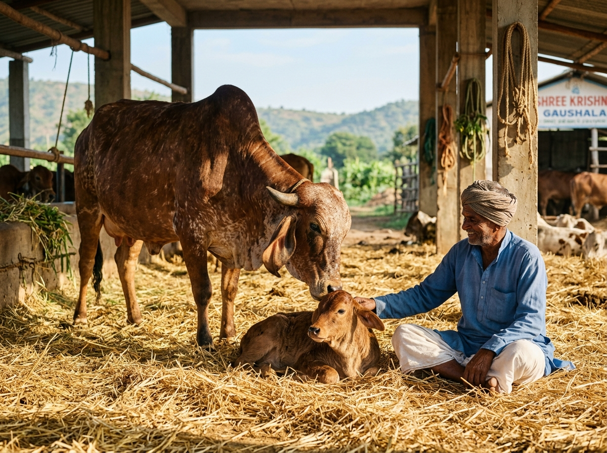

A farm beginning.
A lifelong devotion.
Rooted in ethical cattle care, traditional Vedic practices, and chemical-free sustainable farming.
We don’t just deliver milk.
We preserve sacred traditions that
nourish your family for a lifetime.
Naturally Raised Free-grazing Desi cows
Wood Churned Sacred Vedic clay pots
Glass Bottled Chilled immediately
Every Dawn Delivered by 7:00 AM

Happy cows.
Nectar-like purity.
At VC Organic Farms, we believe that pure food begins with reverence for nature. Our indigenous Gir cows are fed organic green fodder grown on our own farm, watered with clean natural well-water, and allowed to graze freely under the open sky.
We practice strictly cruelty-free Ahimsa milking: calves are always fed their full share first before any milk is collected. We never use hormone injections, commercial pellets, or artificial stimulants.
Our ghee follows the sacred bi-directional wooden Bilona method, churning curd in earthen pots and simmering over slow firewood in heavy brass vessels. Every single jar brings you medicinal, fragrant golden granules.
Connect with our farm team ↗